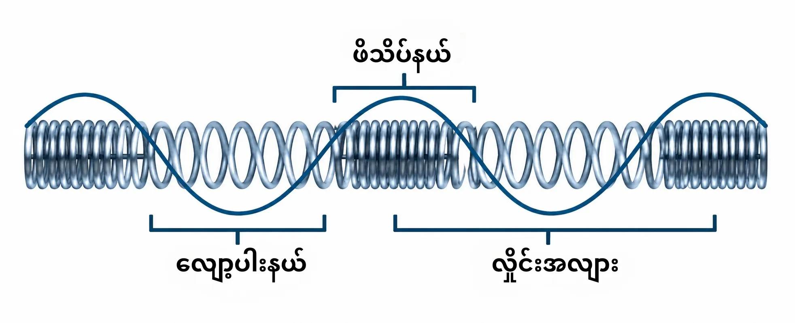
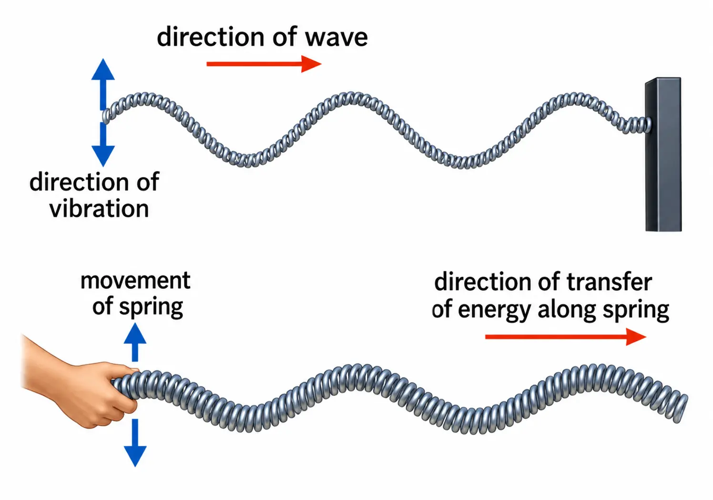
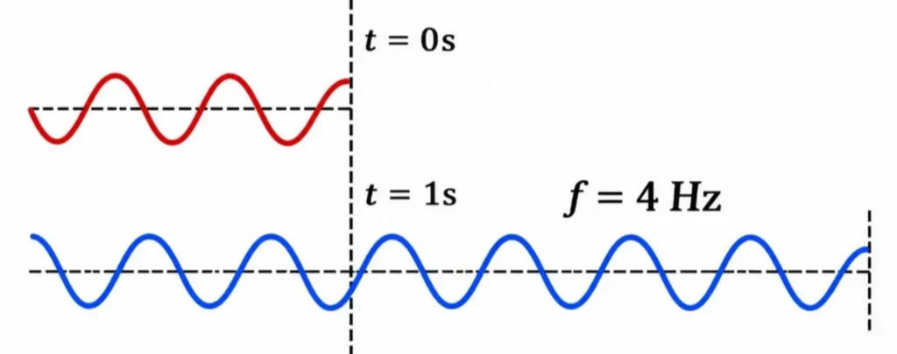
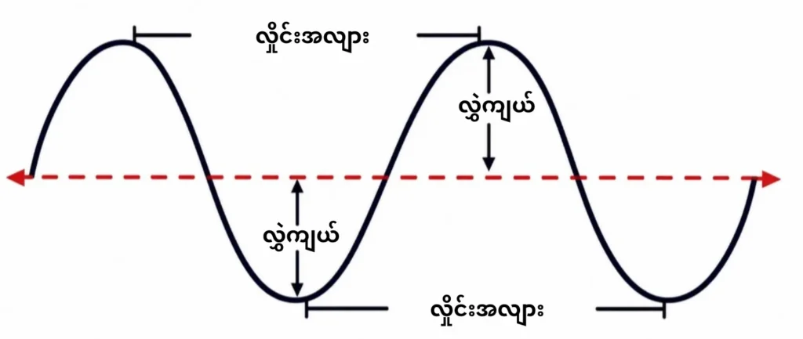

မက္ကနစ်လှိုင်းများ (Mechanical Waves)
ဒြပ်ဝတ္ထုတုန်ခါရာမှ ဖြစ်ပေါ်လာသည့် လှိုင်းများသည် ကြားခံနယ်ကို ဖြတ်သန်းပြီး စွမ်းအင်ကို သယ်ဆောင်လာသည်။ ဒြပ်သားလှိုင်း (Matter wave) ဟုခေါ်သည့် မက္ကနစ်လှိုင်း (Mechanical wave) သည် ဒြပ်သား ကြားခံနယ် (အခဲ၊ အရည်၊ အငွေ့) ကို ဖြတ်သွားသော လှိုင်း (ဥပမာ ရေလှိုင်း၊ အသံလှိုင်း၊ မြေငလျင်လှိုင်း) တို့ဖြစ်သည်။ လှိုင်းများကို အလျားလိုက်လှိုင်းနှင့် ကန့်လန့်လွှဲလှိုင်းဟူ၍ ၂ မျိုးခွဲခြားထားသည်။

အလျားလိုက်လှိုင်း (Longitudinal Wave)
ကြားခံနယ်အမှုန်များ၏ ရွေ့လျားမှုသည် လှိုင်း ရွေ့လျားရာ ဦးတည်ဘက်နှင့် အပြိုင် (ရှေ့တိုး နောက် ဆုတ်) ဖြစ်လျှင် ယင်းလှိုင်းကို အလျားလိုက်လှိုင်း (Longitudinal wave) ဟု ခေါ်သည်။ ဥပမာ အသံလှိုင်း၊ စပရိန် (Slinky or Coil spring) ကျုံ့ခြင်း၊ ဆန့်ခြင်းကြောင့်ဖြစ်သောလှိုင်း

ကန့်လန့်လွှဲလှိုင်း (Transverse Wave)
ကြားခံနယ်အမှုန်များ၏ ရွေ့လျားမှုသည် လှိုင်းရွေ့ လျားရာ ဦးတည်ဘက်နှင့် ထောင့်မတ်ကျလျှင် ယင်းလှိုင်း ကို ကန့်လန့်လွှဲလှိုင်း (Transverse wave) ဟု ခေါ်သည်။ ဥပမာ ရေမျက်နှာပြင်ပေါ်၌ဖြစ်သောလှိုင်း (Water waves)၊ တုန်ခါကြိုးတွင် ဖြစ်ပေါ်သောလှိုင်း (Waves from vibrating string)
ဥပမာ - ရေမျက်နှာပြင်ပေါ်သို့ ခဲလုံးပစ်ချလိုက်သောအခါ ရေပြင်ရှိအမှုန်များသည် အထက်အောက် (ထောင့်မတ်ကျစွာ) တုန်ခါလှုပ်ရှားကြပြီး လှိုင်းကမူ ဘက်စုံသို့ ကွင်းစက်ပုံစံဖြင့် ရွေ့လျားသွားကြသည်။ထို့ကြောင့် ရေမျက်နှာပြင်ပေါ်တွင် ဖြစ်ပေါ်လာသော ရေလှိုင်းများ (Water waves) သည် ကန့်လန့်လွှဲလှိုင်းများ ဖြစ်ကြပေသည်။
လှိုင်း၏ဂုဏ်သတ္တိများ (Properties of Wave)
လှိုင်း၏ အခြေခံဂုဏ်သတ္တိများမှာ ကြိမ်နှုန်း၊ လွှဲချိန်၊ လွှဲကျယ်၊ လှိုင်းအလျားနှင့် လှိုင်းအလျင် တို့ ဖြစ်သည်။
ကြိမ်နှုန်း (Frequency, f): အချိန်တစ်စက္ကန့်အတွင်း အမှတ်တစ်ခု၌ ဖြတ်သွားသော လှိုင်းအလျား သို့မဟုတ် လှိုင်းလုံးအရေအတွက်ကို ကြိမ်နှုန်းဟု ခေါ်သည်။ ကြိမ်နှုန်း၏ ယူနစ်မှာ hertz (Hz) ဖြစ်သည်။

လွှဲချိန် (Period, T): လှိုင်းလုံး တစ်လုံးဖြတ်သွားရန် ကြာမြင့်သော အချိန်ကို လွှဲချိန်ဟုခေါ်သည်။ လွှဲချိန်၏ယူနစ်မှာ second(s) ဖြစ်သည်။
လှိုင်းအလျား (Wavelength, λ): ကပ်လျက်ရှိသော လှိုင်းထိပ် သို့မဟုတ် လှိုင်းခွက် ၂ ခု ကြား အကွာအဝေး ကို လှိုင်းအလျားဟုခေါ်သည်။

လွှဲကျယ် (Amplitude, A): လှိုင်းထိပ်၏အမြင့် သို့မဟုတ် လှိုင်းခွက်၏အနက်ကို လွှဲကျယ်ဟု ခေါ်သည်။ လွှဲကျယ်များလျှင် သယ်ဆောင်လှိုင်း၏ စွမ်းအင်လည်း များလာသည်။
လှိုင်းအလျင် (Wave velocity, v): လှိုင်းအလျင်ဆိုသည်မှာ အချိန် တစ်စက္ကန့်အတွင်း ရွေ့လျားသော အကွာအဝေးကို ခေါ်သည်။
လှိုင်းအလျင် = ကြိမ်နှုန်း x လှိုင်းအလျား
v (Wave velocity) = f (Frequency) x λ(Wavelength)
လှိုင်းအလျင်၏ယူနစ်မှာ metre per second (ms-1) ဖြစ်သည်။
တွက်ချက်မှု ဥပမာ - လှိုင်းတစ်ခုရဲ့ Frequency က 5 Hz ဖြစ်ပြီး Wavelength က 2 m ဖြစ်တယ်ဆိုရင် လှိုင်းအလျင်ကို တွက်ပါ။
v = f x λ
v = 5 x 2
v = 10 m/s